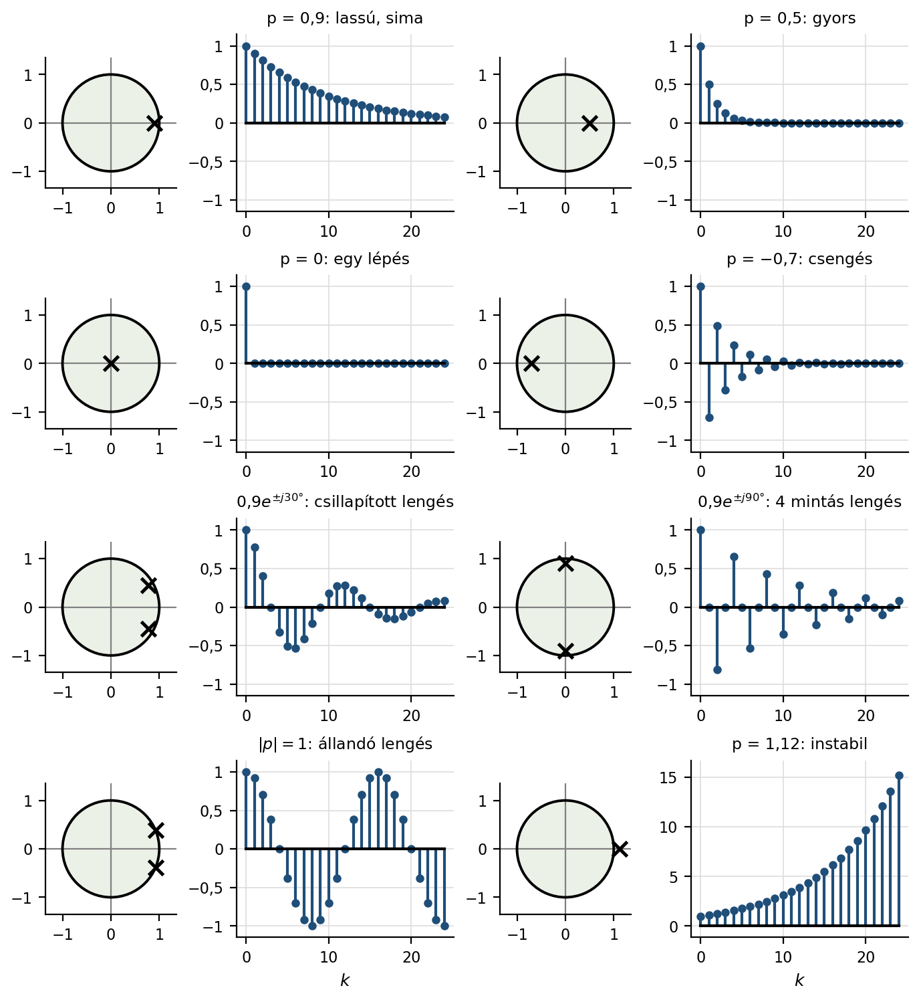

21.2 A z-transzformáció és a
diszkrét átviteli függvény
21.2.1 Motiváció: ugyanaz a
P-szabályozó, de most instabil
A tempomat folytonos modelljén
(,
kg,
N·s/m, a sebesség és az erő a munkaponttól mért eltérés) az arányos
szabályozás
minden pozitív
-re
stabil: a zárt kör pólusa
,
mindig negatív. Most futtassuk ugyanezt digitálisan,
s mintavételi idővel, a beavatkozást a mintavételek között állandónak
tartva.
A
intervallumban
állandó, ezért az elsőrendű KDE megoldása pontosan
Ez egy differenciaegyenlet (difference
equation): az új érték a régiekből egy szorzással és összeadással
adódik. Helyettesítsük be a szabályozót:
.
Mielőtt tovább olvasol, tippeld meg: mi történik
,
és
N·s/m esetén?
A visszacsatolt rendszer minden lépésben a
számmal szorozza az eltérést.
esetén
:
gyors, sima beállás.
esetén
:
az eltérés minden lépésben előjelet vált, a sebesség
„csenget”.
esetén
:
az eltérés egyre nő, a kör instabil. A folytonos
tervben ilyen korlát nem volt – a mintavétel hozta be. A digitális
rendszerek elemzéséhez ezért saját eszköz kell: a
z-transzformáció.
21.2.2 Szemlélet: a pólus a
lépésenkénti szorzó
A diszkrét rendszer pólusa az a szám, amellyel egy sajátmódus
lépésenként szorzódik. Az ábra nyolc pólushelyet és a hozzájuk tartozó
impulzusválaszt mutatja.

Diszkrét pólushelyek a z-síkon és a hozzájuk tartozó
impulzusválaszok: az egységkörön belül lecsengés, a körön állandó
lengés, kívül növekedés
Három megfigyelés, amelyet a képletek is igazolni fognak:
a pólus abszolút értéke dönti el, hogy a válasz
lecseng-e
(),
megmarad-e
()
vagy nő
()
– ez „a pólus dönt” elv diszkrét változata;
a pólus szöge a lengés gyorsaságát adja:
°
szög 12 mintás,
°
4 mintás periódus;
a negatív valós pólus a leggyorsabb lehetséges
lengést adja (2 mintás periódus), amelynek folytonos elsőrendű
rendszerben nincs párja.
21.2.3 A z-transzformáció
Definíció. Az
sorozat (egyoldali) z-transzformáltja
A sor azokra a komplex
számokra konvergál, amelyek elég nagy abszolút értékűek (a konvergencia
tartományának részletei az adv-dsp könyv témája). A
egyszerűen azt „jegyzi meg”, hogy a
érték a
-adik
lépéshez tartozik.
A legfontosabb alappárok a mértani sorösszegből következnek:
Sorozat
()
egységimpulzus:
,
a többi 0
egységugrás:
mértani sorozat:
mintavételezett exponenciális:
rámpa:
Például
,
ha
.
Az ugrás az
eset, az exponenciális az
eset.
Eltolási tétel. A késleltetett sorozat (a
értékek nullák) transzformáltja:
A második lépésben
helyettesítést tettünk. Tehát
egy mintányi késleltetés. Előretolásra hasonlóan
adódik.
Végérték-tétel. Ha
minden pólusa az egységkörön belül van, akkor
Indoklás: a
különbségek összege teleszkopikus, és a
határátmenet éppen ezt az összeget adja. A feltétel nélkül a tétel
hazudik:
esetén
a
helyen nulla, pedig a sorozat a végtelenbe tart.
21.2.4 Kezdeti feltétel és a
sajátmódus
A z-transzformáció a Laplace-transzformációhoz hasonlóan a kezdeti
értékeket is kezeli. Oldjuk meg az
egyenletet adott
-lal.
Az előretolási szabály szerint
,
ebből
A nevező gyöke, a
pólus, tehát a szabad válasz lépésenkénti szorzója.
Általában az
homogén egyenlet megoldása egyszeres gyökök esetén
,
ahol a
a
karakterisztikus polinom gyökei, a
állandókat pedig az
kezdeti érték határozza meg. Ez pontosan a Lineáris
differenciálegyenletek és a karakterisztikus egyenlet alfejezet
gondolatmenete, csak az exponenciális helyett mértani sorozattal.
21.2.5 Differenciaegyenlet és
diszkrét átviteli függvény
Egy lineáris, állandó együtthatós differenciaegyenlet általános
alakja
Nulla kezdeti feltételek mellett az eltolási tételt tagonként
alkalmazva a diszkrét átviteli függvény:
Ha a számlálót és a nevezőt
-nel
szorozzuk, pozitív hatványú polinomokat kapunk, ezek gyökei a
pólusok és a zérusok. A kauzalitás (a
kimenet nem előzheti meg a bemenetet) azt jelenti, hogy a számláló
fokszáma nem nagyobb a nevezőénél. Az impulzusválasz egyszeres pólusok
esetén
alakú (egy esetleges közvetlen
tagtól eltekintve) – ugyanúgy, ahogy a folytonos esetben
.
Tétel (diszkrét BIBO-stabilitás). A
rendszer pontosan akkor BIBO-stabil, ha (a kiejtések után) minden
pólusára
.
Az egységkörön lévő egyszeres pólus határeset, a többszörös egységköri
pólus
(
tag miatt) növekvő választ ad. (A folytonos megfelelőt lásd a BIBO- és belső stabilitás alfejezetben.)
Gyors kézi vizsgálatra való a Jury-teszt, a
Routh–Hurwitz-kritérium diszkrét párja. Másodfokú nevezőre,
,
a feltételek:
,
és
.
Magasabb fokra táblázatos eljárás létezik; mi numerikusan gyököket
számolunk.
21.2.6 Holtidő és zérusok a
z-tartományban
A folytonos időben a holtidő
tényező, amelyet pólusokkal és zérusokkal csak közelíteni lehet.
Diszkrét időben viszont, ha a holtidő a mintavételi idő egész
többszöröse,
,
akkor a hatása pontosan
:
darab pólus az origóban. A hőkamra
(
K/%,
s,
s)
s mellett, nulladrendű tartóval
A két origóbeli pólus a 20 s holtidő, a
pólus a hőtehetetlenség. (Honnan jön a számláló, azt a Diszkretizálási módszerek alfejezet vezeti
le.)
A zérusok nem a
szabállyal képződnek: a mintavételezés új, a folytonos rendszerben nem
létező zérusokat hoz létre, amelyek akár az egységkörön kívül is
lehetnek. Ez különösen magas relatív fokszámú folyamatnál és gyors
mintavételnél fordul elő, és korlátozza a folyamatot „megfordító”
tervezéseket (ellenőrizendő: a pontos feltételeket lásd [S-AW]).
21.2.7 Az
-sík
és a
-sík
kapcsolata
Mintavételezzük a folytonos
módust:
.
Ez egy mértani sorozat, tehát a mintavételezett rendszer pólusa
Legyen
.
Ekkor
és
.
Ebből:
a bal félsík
()
az egységkör belsejébe, a képzetes tengely az
egységkörre képződik;
az állandó
egyenesek origó középpontú körökre, az állandó
egyenesek sugarakra mennek;
A tervezéshez a legfontosabb az állandó
és
görbék képe. A
pólusra,
jelöléssel,
azaz állandó
mellett a sugár a szöggel exponenciálisan csökken: logaritmikus
spirál. Az állandó
görbék a spirálokra merőlegesen futnak.
Statikus változat (mint a PDF-ben)
Az
–
leképezés: az állandó
sugarak spirálokká, az állandó
félkörök görbékké válnak; A pont a stabil lengő módus, B pont a
Nyquist-vonalon a negatív valós tengelyre képződik
Visszafelé is dolgozhatunk: egy diszkrét pólushoz
(a főágon) tartozik, ebből
és
.
A 2%-os lecsengéshez szükséges lépésszám pedig
-ből
.
Specifikáció a z-síkon. A folytonos előírásokból így
lesz diszkrét tartomány. Ha a 2%-os beállási idő legfeljebb
,
a domináns pólusra a
közelítés szerint
,
vagyis
:
egy origó körüli, az egységkörnél kisebb kör belseje. Az előírt
legkisebb
a spirálon belüli tartományt jelöli ki. Például
s és
s esetén
;
ha
is előírás, a pólusnak a
-es
spirál „vitorla” alakú belsejében is kell lennie. A tartomány ugyanazt
fejezi ki, mint az
-síkon
a függőleges egyenes és a ferde sugár – csak görbe vonalakkal.
Csengés. Egy
pólushoz
tartozik: a lengés pontosan a Nyquist-körfrekvencián van. Zárt körben ez
a beavatkozó jel mintáról mintára váltakozó előjelében látszik („a
beavatkozó jel is eredmény”), miközben a kimenet a mintapontokban akár
simának is tűnhet.
21.2.8 Diszkrét
frekvenciaválasz
Adjunk a rendszerre
bemenetet. Stabil rendszer állandósult válasza
,
ugyanazzal az érveléssel, mint a folytonos esetben (A frekvenciaválasz fogalma). Tehát a
frekvenciaválasz a
egységkörön vett értéke,
.
Ez
-ban
szerint periodikus, és elég a
tartományon vizsgálni.
Két nevezetes pont van. Az
körfrekvenciának a
pont felel meg, itt a statikus erősítést kapjuk,
.
Az
körfrekvenciának a
pont felel meg, itt a leggyorsabb, mintáról mintára váltakozó bemenet
erősítése
.
Az
szűrőre
és
:
aluláteresztő, amely a leggyorsabb jelet kb. 25,6 dB-lel
csillapítja.
Figyeld meg:
még stabil, de a sebesség már az első lépésben az alapjel 146%-ára ugrik
(a végérték csak
),
majd váltakozva közelít. A kézi számpélda és a pólusleképezés
ellenőrzése:
Spirál. Az interaktív ábrán az „ζ = 0,5, ω_n = 2”
gomb után húzd a pólust az
-síkon
az állandó
sugár mentén kifelé. A
-síkon
a kép a szaggatott spirálon halad befelé: gyorsabb folytonos módus = a
-origóhoz
közelebbi, egyben nagyobb szögű pólus.
Mintavételi idő hatása. Rögzített
mellett csökkentsd
-t
0,05-re: a pólus a
pont közelébe vándorol, bármi is
.
Miért érzékeny ott a pólushely a kerekítésre?
Negatív valós pólus. A „negatív valós z” gombnál
:
a minták mintáról mintára előjelet váltanak, miközben a folytonos módus
sima lengés.
Átlapolt pólus. Az „átlapolt pólus” gombnál
(,
rad/s) a gyors módus mintái egy 1,43 rad/s-os lassú módusnak
látszanak.
21.2.12 Tipikus hibák
Tünet: a diszkrét modellre a
feltételt alkalmazzák, és egy
pólusú stabil rendszert instabilnak minősítenek. Ok: a
folytonos és a diszkrét stabilitási tartomány keverése.
Javítás: diszkrét időben
.
Tünet: a végérték-tétel véges értéket ad, a
szimuláció viszont elszáll. Ok: a feltételt (minden
pólus az egységkörön belül, legfeljebb egyszeres
pólus kiejtésével) nem ellenőrizték. Javítás: előbb a
pólusok, utána a tétel.
Tünet: a holtidős folyamat diszkrét modelljében a
késleltetés egy mintával kevesebb vagy több. Ok: a
ZOH-modell saját egymintás késleltetését és a holtidő
tényezőjét összekeverik. Javítás: ellenőrizd az
ugrásválaszon, hányadik mintánál mozdul meg először a kimenet.
Tünet: a számolt differenciaegyenlet egy mintával
eltolt választ ad. Ok: a
és a
szerinti együtthatók keverése, a számláló rövidebb a nevezőnél.
Javítás: a zinv() alakot használd, vagy
töltsd ki nullákkal a számláló elejét.
Tünet: „stabil” a diszkrét kör, de a beavatkozó jel
minden mintában előjelet vált, a hajtómű melegszik. Ok:
negatív valós tengely közeli pólus. Javítás: a
pólusokat a jobb félsíkon, jól csillapított spiráltartományban
válaszd.
Tünet: egy erősítés, amely folytonosan stabil volt,
digitálisan instabil. Ok: a mintavétel és a tartás
hatása hiányzik a tervből. Javítás: diszkrét modellen
ellenőrizz.
21.2.13 Önellenőrzés
Mit jelent
az időtartományban?
Mikor stabil egy diszkrét rendszer?
Hová képződik az
pont és a képzetes tengely?
Milyen választ ad a
pólus?
Mi a végérték-tétel alkalmazhatóságának feltétele?
21.2.14 Feladatok
(A) Írd fel
z-transzformáltját, és ellenőrizd a végértéket a tétellel.
(A)
.
Add meg
-t,
a pólust, a statikus erősítést, és hogy hány lépés alatt éri el az
ugrásválasz tartósan a végérték 2%-os sávját.
(B) Milyen
értékekre stabil a
nevezőjű rendszer?
(B) Folytonos előírás:
,
rad/s,
s. Add meg a diszkrét pólusokat és a kívánt karakterisztikus
polinomot.
(B) Egy mért diszkrét pólus
,
s. Mekkora a megfelelő
,
és a 2%-os lecsengés lépésszáma?
(C, programozós) Írj függvényt, amely másodfokú
polinomra a Jury-feltételeket vizsgálja, és hasonlítsd össze a gyökök
abszolút értékén alapuló vizsgálattal 10 000 véletlen
esetre (mag: 62).